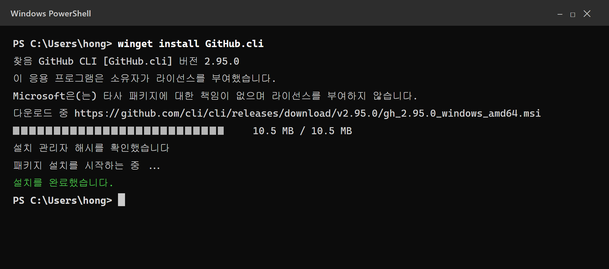
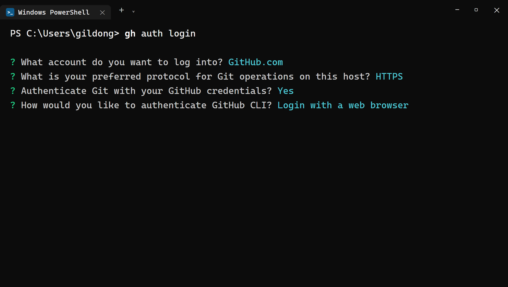
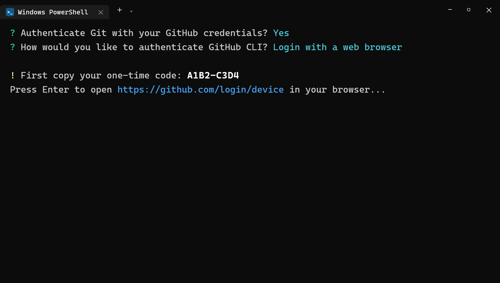
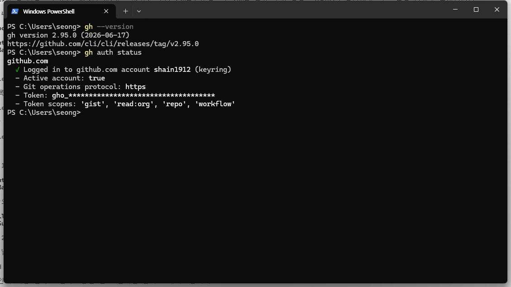
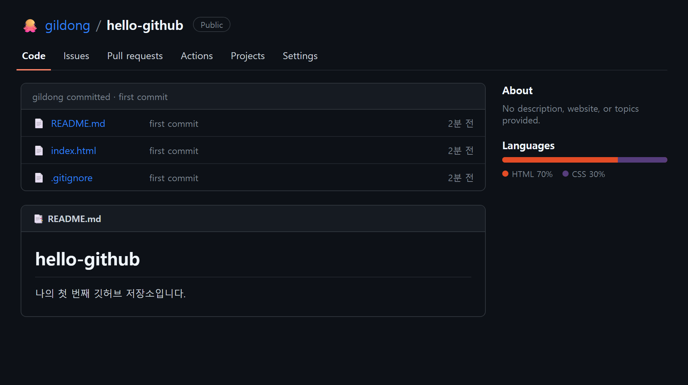

5장 GitHub CLI로 깃허브 연결¶
이 장에서 배우는 것
- 깃허브(GitHub)가 무엇이고 왜 필요한지 이해합니다
- GitHub 계정을 만들고, GitHub CLI(
gh)를 winget으로 설치합니다 gh auth login으로 터미널과 깃허브를 브라우저 인증으로 연결합니다gh repo create로 첫 원격 저장소를 만들고git push로 올려 봅니다
5.1 깃허브, 내 코드의 클라우드 금고¶
3장에서 우리는 Git을 설치하면서 "되돌리기는 바이브코딩의 안전벨트"라고 배웠습니다. Git은 내 컴퓨터 안에서 코드의 역사를 기록해 주는 도구였지요. 그런데 한 가지 불안이 남습니다. 그 역사가 전부 내 컴퓨터 안에만 있다는 점입니다.
노트북을 잃어버리면? 하드디스크가 고장 나면? 커피를 쏟으면? 지금까지 쌓아 온 커밋이 통째로 사라집니다. 사진을 구글 포토나 아이클라우드에 백업하듯, 코드에도 클라우드 백업이 필요합니다. 그 역할을 하는 곳이 바로 깃허브(GitHub)1입니다.
깃허브는 Git 저장소를 인터넷에 올려 두는 서비스입니다. 내 컴퓨터의 저장소를 깃허브에 올려 두면(이걸 푸시(push)라고 합니다) 컴퓨터가 어떻게 되든 코드는 안전합니다. 다른 컴퓨터에서 내려받아 이어서 작업할 수도 있고, 링크 하나로 다른 사람에게 보여 줄 수도 있습니다.
이 책에서 깃허브는 세 가지 역할을 맡습니다.
- 백업 — 매일의 작업을 클라우드에 안전하게 보관합니다.
- 포트폴리오 — 완성한 지도 웹앱의 코드가 내 깃허브 프로필에 쌓입니다. 개발자에게 깃허브 프로필은 명함이자 이력서입니다.
- 배포 — 25장에서 우리는 깃허브의 무료 호스팅 기능(GitHub Pages)으로 지도 웹을 전 세계에 공개합니다. 깃허브에 올라가 있어야 배포도 할 수 있습니다.
깃허브에는 백업 이상의 매력도 있습니다. 전 세계 개발자들이 깃허브에 코드를 공개해 두고 서로의 코드를 읽고, 고치고, 나눕니다. 우리가 이 책에서 쓰는 도구들 — Node.js도, Git도, 심지어 GitHub CLI 자신도 — 전부 깃허브에 코드가 공개돼 있는 오픈소스입니다. 계정을 만든다는 것은 이 거대한 공유의 세계에 내 자리를 하나 마련하는 일이기도 합니다.
그런데 깃허브를 터미널에서 편하게 다루려면 도구가 하나 더 필요합니다. 바로 GitHub CLI, 명령어로는 gh입니다. CLI는 Command Line Interface의 약자로, 마우스 클릭 대신 명령어로 조작하는 프로그램을 말합니다. 원래 깃허브에 저장소를 만들려면 브라우저를 열고, 로그인하고, 버튼을 여러 번 눌러야 합니다. gh가 있으면 터미널에서 명령 한 줄로 끝납니다. 저장소 만들기, 목록 보기, 삭제, 나중에 배울 풀 리퀘스트까지 깃허브에서 할 수 있는 거의 모든 일을 터미널에서 처리할 수 있습니다.
무엇보다 중요한 건, Claude Code가 gh를 아주 잘 쓴다는 점입니다. "이 프로젝트 깃허브에 올려 줘"라고 시키면 Claude Code는 속으로 gh 명령을 실행합니다. 브라우저는 사람의 도구이지 에이전트의 도구가 아닙니다. 에이전트는 터미널에서 일하기 때문에, 터미널에서 깃허브를 다룰 수 있는 gh가 곧 에이전트의 손발이 됩니다. 우리가 미리 gh를 설치하고 로그인해 두면, 그때부터 깃허브 관련 일은 전부 에이전트에게 맡길 수 있게 되는 겁니다. 이 장에서 우리가 하는 일은 말하자면 에이전트에게 깃허브 출입증을 만들어 주는 일입니다.
💡 팁
Git과 GitHub는 이름이 비슷해서 자주 헷갈립니다. Git은 내 컴퓨터에서 도는 버전 관리 프로그램이고, GitHub는 Git 저장소를 올려 두는 웹 서비스입니다. "한글(프로그램)"과 "네이버 클라우드(서비스)"의 관계와 비슷합니다. GitHub 말고도 GitLab, Bitbucket 같은 비슷한 서비스가 있지만, 세계에서 가장 많이 쓰이는 곳은 GitHub입니다.
5.2 GitHub 계정 만들기¶
이미 깃허브 계정이 있다면 이 절은 건너뛰고 5.3절로 가셔도 됩니다. 처음이라면 함께 만들어 봅시다. 계정 생성은 무료이고, 신용카드도 필요 없습니다.
브라우저에서 github.com 에 접속한 뒤 오른쪽 위의 Sign up 버튼을 누릅니다.
가입 절차는 화면 안내를 따라가면 됩니다. 순서대로 정리하면 이렇습니다.
- Email — 자주 확인하는 이메일 주소를 입력합니다. 인증 메일이 오니 실제 쓰는 주소여야 합니다.
- Password — 15자 이상, 또는 숫자와 소문자를 포함한 8자 이상이어야 합니다.
- Username — 깃허브에서 나를 부르는 이름입니다. 프로필 주소가
github.com/사용자이름이 되니 신중하게 고릅시다. 영문 소문자와 숫자, 하이픈(-)만 쓸 수 있습니다. - 이메일 인증 — 입력한 메일함으로 온 인증 코드(또는 퍼즐 확인)를 입력하면 가입이 끝납니다.
💡 팁
Username은 나중에 포트폴리오 주소가 됩니다. github.com/kimcoding 처럼 깔끔한 이름이 github.com/qwer1234asdf 보다 훨씬 보기 좋습니다. 본명 로마자, 닉네임, 블로그 아이디 등 오래 써도 부끄럽지 않을 이름을 추천합니다. 나중에 바꿀 수는 있지만, 바꾸면 기존 주소 링크가 끊어질 수 있습니다.
가입을 마치면 몇 가지 설문(팀 규모, 관심사 등)이 나올 수 있는데, 아래쪽의 건너뛰기(Skip) 링크를 눌러도 아무 문제 없습니다. 유료 플랜을 권하는 화면이 나와도 마찬가지입니다 — 이 책의 모든 작업은 무료 플랜(Free)으로 충분합니다. 공개 저장소는 개수 제한 없이 만들 수 있고, 비공개 저장소도 무료로 쓸 수 있으며, 25장에서 쓸 GitHub Pages 배포까지 전부 무료 범위 안입니다. 대시보드 화면이 나오면 계정 준비 완료입니다.
시간이 있다면 한 가지를 더 해 두면 좋습니다. 프로필 설정에서 2단계 인증(Two-factor authentication)을 켜는 것입니다. 비밀번호가 유출돼도 휴대폰 인증 앱의 확인이 없으면 로그인할 수 없게 막아 주는 장치입니다. 깃허브 계정에는 앞으로 여러분의 모든 코드가 쌓이게 되므로, 은행 계좌만큼은 아니어도 이메일 계정만큼은 소중히 지킬 가치가 있습니다. 오른쪽 위 프로필 아이콘 → Settings → Password and authentication 메뉴에서 켤 수 있습니다. 지금 당장 하지 않아도 이 장을 진행하는 데 지장은 없습니다.
⚠️ 주의
가입에 쓴 이메일 주소를 기억해 두세요. 3장에서 git config user.email에 설정한 주소와 깃허브 가입 주소가 같아야, 내가 올린 커밋이 내 프로필 활동(잔디밭)으로 집계됩니다. 다르게 설정했다면 git config --global user.email "깃허브가입메일" 로 맞춰 주면 됩니다.
5.3 GitHub CLI 설치 — winget 한 줄이면 끝¶
이번에는 설치가 아주 쉽습니다. 2장의 Node.js처럼 홈페이지에서 설치 파일을 내려받아 마법사를 몇 번씩 넘길 필요도 없습니다. 윈도우에 기본으로 들어 있는 패키지 관리자 winget2을 쓰면 명령 한 줄로 끝납니다. 패키지 관리자란 프로그램의 다운로드·설치·업데이트를 명령어로 대신해 주는 도구입니다. 스마트폰에서 앱스토어가 하는 일을 터미널에서 한다고 생각하면 정확합니다. 명령줄에 익숙해질수록 이런 설치 방식이 오히려 클릭보다 빠르고 실수도 적다는 걸 느끼게 되실 겁니다.
PowerShell(또는 Windows Terminal)을 열고 아래 명령을 입력하세요.
처음 실행하면 약관(msstore 이용 약관) 동의를 묻는 경우가 있습니다. Y를 입력하고 Enter를 누르면 다운로드와 설치가 자동으로 진행됩니다.

설치가 끝났다면 확인해 봅시다. 여기서 중요한 한 가지 — 지금 열려 있는 터미널 창은 방금 설치된 gh의 위치(PATH)를 아직 모릅니다. 터미널을 완전히 닫고 새로 연 다음 아래를 입력하세요.

버전 번호가 나오면 성공입니다. 숫자는 책과 달라도 괜찮습니다. 만약 'gh' 용어가 cmdlet... 이름으로 인식되지 않습니다 같은 빨간 오류가 나온다면, 십중팔구 터미널을 새로 열지 않은 것이니 창을 닫고 다시 열어 보세요. 그래도 안 되면 컴퓨터를 한 번 재부팅하면 대부분 해결됩니다.
🗣 이렇게 시키세요
winget install GitHub.cli 를 실행했는데 새 터미널에서도 gh --version이 안 먹혀. 오류 메시지는 이거야: (오류 붙여넣기) 원인 찾아서 고쳐 줘.
설치 문제야말로 Claude Code에게 맡기기 좋은 일입니다. 4장에서 설치한 Claude Code를 띄우고 오류 메시지를 그대로 붙여 넣으면, PATH 환경 변수를 점검하고 해결 방법을 단계별로 알려 줍니다. 오류 메시지를 요약하지 말고 통째로 복사해서 주는 게 요령입니다.
5.4 gh auth login — 터미널과 깃허브 악수시키기¶
gh를 설치했지만 아직 gh는 내가 누군지 모릅니다. 이 상태로 저장소를 만들려고 하면 "먼저 로그인하라"는 안내만 돌아옵니다. 터미널이 "저는 방금 가입한 그 계정 주인입니다"라고 깃허브에 증명하는 절차가 필요합니다. 이것을 인증(authentication)이라고 하고, 명령은 gh auth login 입니다.
과정이 여러 단계처럼 보이지만 실제로는 3분이면 끝납니다. 큰 흐름은 이렇습니다: 터미널이 8자리 코드를 보여 준다 → 브라우저가 열린다 → 코드를 입력한다 → 끝. 은행 앱에서 새 기기를 등록할 때 인증 번호를 확인하는 것과 같은 원리입니다. 하나씩 따라가 봅시다.
새 터미널에서 입력합니다.
그러면 터미널이 물음표(?)가 붙은 질문을 차례로 던집니다. 화살표 키(↑↓)로 고르고 Enter로 확정합니다.
질문 1 — 어디에 로그인할까요?
GitHub.com 을 선택합니다. (회사에서 쓰는 별도 깃허브 서버가 아니라면 항상 이것입니다.)
질문 2 — Git 통신 방식은?
HTTPS 를 선택합니다. SSH는 열쇠 파일을 따로 만들어야 하는 고급 방식인데, HTTPS로도 전혀 부족함이 없습니다.
질문 3 — Git 인증도 깃허브 계정으로?
Yes 를 선택합니다. 이걸 Yes로 해 두면 나중에 git push 할 때 아이디와 비밀번호를 따로 묻지 않습니다. 아주 편해지는 옵션이니 꼭 Yes로 하세요.
질문 4 — 어떻게 로그인할까요?
? How would you like to authenticate GitHub CLI?
> Login with a web browser
Paste an authentication token
Login with a web browser 를 선택합니다. 토큰 방식은 문자열을 직접 발급받아 붙여 넣는 방식으로, 지금은 필요 없습니다.

여기까지 답하면 터미널에 일회용 코드가 나타납니다.
! First copy your one-time code: A1B2-C3D4
Press Enter to open https://github.com/login/device in your browser...

이 코드(예: A1B2-C3D4)를 마우스로 드래그해 복사(Ctrl+C)해 두고, Enter를 누릅니다. 그러면 기본 브라우저가 자동으로 열리면서 깃허브의 Device Activation 페이지가 나타납니다. (깃허브에 로그인돼 있지 않다면 먼저 로그인 화면이 나옵니다 — 5.2절에서 만든 계정으로 로그인하세요.)
브라우저 화면의 입력 칸에 아까 복사한 코드를 붙여 넣고 Continue를 누릅니다. 이어서 "GitHub CLI가 계정에 접근하는 것을 허용할까요?"라고 묻는 Authorize github 화면이 나오면 초록색 Authorize 버튼을 누릅니다. "Congratulations, you're all set!" 같은 완료 메시지가 보이면 브라우저에서 할 일은 끝입니다.
터미널로 돌아와 보세요. 몇 초 안에 이런 출력이 나타납니다.
✓ Authentication complete.
- gh config set -h github.com git_protocol https
✓ Configured git protocol
✓ Logged in as 여러분의아이디

Logged in as 뒤에 내 아이디가 나오면 연결 성공입니다. 방금 무슨 일이 일어난 걸까요? 브라우저에서 Authorize를 누르는 순간, 깃허브는 "이 터미널을 믿어도 된다"는 증표인 접근 토큰을 발급해서 gh에게 건네줍니다. gh는 이 토큰을 내 컴퓨터에 안전하게 저장해 두고, 이후 깃허브와 통신할 때마다 비밀번호 대신 토큰을 내밉니다. 비밀번호는 브라우저의 깃허브 화면에 딱 한 번 입력했을 뿐, 터미널에는 흔적도 남지 않습니다. 코드를 브라우저에 입력하는 이 방식이 번거로워 보여도 실은 비밀번호를 여기저기 흘리지 않기 위한 안전 설계인 셈입니다.
이 인증은 한 번 해 두면 계속 유지됩니다. 컴퓨터를 껐다 켜도 다시 로그인할 필요가 없습니다. 다만 컴퓨터를 새로 장만하거나 포맷하면 토큰도 사라지므로 그때는 gh auth login을 다시 하면 됩니다. 언제든 상태가 궁금하면 gh auth status 를 입력해 보세요. 어떤 계정으로 로그인돼 있는지, 어떤 프로토콜을 쓰는지 보여 줍니다.
⚠️ 주의
일회용 코드에는 유효 시간이 있습니다. 코드를 받아 놓고 한참 뒤에 입력하면 만료돼서 실패합니다. 만료됐다면 당황하지 말고 터미널에서 gh auth login 을 처음부터 다시 실행하면 새 코드가 나옵니다. 또 하나 — 인증 과정에서 깃허브 비밀번호는 브라우저의 github.com 화면에만 입력합니다. 터미널이 비밀번호 자체를 묻는 일은 없습니다.
5.5 첫 원격 저장소 — gh repo create와 git push¶
연결이 됐으니 기념으로 첫 저장소를 깃허브에 올려 봅시다. 지도 앱은 8장부터 만들 것이므로, 여기서는 연습용 미니 저장소로 전체 흐름만 경험합니다. 흐름은 네 박자입니다. 폴더 만들기 → git init(지역 저장소) → commit(기록) → gh repo create(깃허브에 올리기).
바이브코딩답게, 이번에는 Claude Code에게 통째로 시켜 보겠습니다. 연습 폴더를 하나 만들어 Claude Code를 띄운 뒤 이렇게 말합니다.
🗣 이렇게 시키세요
hello-github 라는 연습용 저장소를 만들고 싶어. 이 폴더에 나를 소개하는 README.md를 한국어로 짧게 만들고, git 저장소로 초기화해서 첫 커밋을 한 다음, gh로 내 깃허브에 public 리포로 올려 줘.
Claude Code는 권한을 물어 가며(4장에서 배운 그 확인 창입니다) 대략 다음 명령들을 실행합니다. AI가 실행하는 명령을 하나씩 함께 읽어 봅시다. 우리가 직접 칠 일은 없지만, 무슨 일이 벌어지는지는 알고 있어야 에이전트를 지휘할 수 있습니다.
git init
git add README.md
git commit -m "첫 커밋: README 추가"
gh repo create hello-github --public --source=. --push
한 줄씩 뜯어 보면 이렇습니다.
git init— 이 폴더를 Git 저장소로 만듭니다(3장 복습). 아직 내 컴퓨터 안 이야기입니다.git add/git commit— README 파일을 기록장에 올리고 "첫 커밋"이라는 이름으로 역사에 도장을 찍습니다.gh repo create hello-github --public --source=. --push— 이 한 줄이 오늘의 주인공입니다. 깃허브에hello-github라는 저장소를 만들고(--public: 누구나 볼 수 있게), 현재 폴더(--source=.)를 그 저장소와 연결한 뒤, 지금까지의 커밋을 즉시 올립니다(--push).
여기서 개념 하나만 짚고 갑시다. 내 컴퓨터의 저장소와 깃허브의 저장소가 연결되면, 깃허브 쪽을 원격 저장소(remote)라고 부르고 보통 origin이라는 별명을 붙입니다. 이후로 커밋을 깃허브에 올릴 때는 이렇게 씁니다.
push는 "밀어 올리다"라는 뜻 그대로, 내 컴퓨터에 쌓인 새 커밋을 origin(깃허브)으로 밀어 올리는 명령입니다. 반대로 깃허브의 내용을 내 컴퓨터로 끌어오는 명령은 git pull입니다. 올릴 땐 push, 받을 땐 pull — 이 두 단어만 기억하면 됩니다.
정말 올라갔는지 눈으로 확인해 봅시다. 터미널에 아래를 입력하면 방금 만든 저장소가 브라우저로 열립니다.

브라우저에 github.com/내아이디/hello-github 페이지가 뜨고, 방금 만든 README가 그대로 보이면 성공입니다. 축하합니다 — 여러분의 코드가 처음으로 인터넷에 올라갔습니다. 저장소 페이지를 잠깐 둘러봅시다. 가운데에 파일 목록이 있고, 그 아래에 README 내용이 자동으로 펼쳐져 보입니다. 파일 목록 위의 "1 commit" 같은 표시를 누르면 커밋 역사를 볼 수 있습니다. 앞으로 커밋이 쌓일수록 이 역사가 길어지고, 프로필의 잔디밭(기여 그래프)에도 초록 칸이 하나씩 채워집니다.
이제 이 흐름이 이 책 전체에서 습관처럼 반복됩니다. 작업이 하나 끝날 때마다 커밋하고(commit), 밀어 올리는(push) 두 박자. 저는 실제로 기능 하나를 바이브코딩으로 완성할 때마다 Claude Code에게 "커밋하고 푸시해 줘"라고 말하는 것을 마무리 인사처럼 씁니다. 하루 작업이 날아가는 최악의 사고는, 이 두 박자 습관만 있으면 절대 일어나지 않습니다. 24장에서는 지도 웹앱을 이 방법 그대로 올리고, 25장에서는 거기서 바로 배포까지 갑니다.
💡 팁
연습이 끝난 hello-github 저장소는 지워도 됩니다. 깃허브 저장소 페이지에서 Settings 탭 맨 아래 Danger Zone의 Delete this repository를 누르면 됩니다. 실수 삭제를 막으려고 저장소 이름을 그대로 입력해야 지워지게 되어 있으니, 반대로 말하면 웬만해선 실수로 지워질 일도 없습니다. 그냥 둬도 물론 괜찮습니다.
5.6 마무리¶
이제 우리 작업 환경의 마지막 퍼즐이 맞춰졌습니다. Node.js(2장) 위에서 도구들이 돌고, Git(3장)이 역사를 기록하고, Claude Code(4장)가 코드를 짜고, GitHub CLI(5장)가 그 결과를 클라우드로 올립니다. 앞으로 어떤 장에서든 "지금까지 작업 깃허브에 올려 줘" 한마디면 커밋과 푸시가 자동으로 이루어지는 환경이 완성된 것입니다. 터미널에서 gh auth status 한 줄로 언제든 연결 상태를 확인할 수 있다는 것도 기억해 두세요.
📌 핵심 요약
- GitHub는 Git 저장소의 클라우드 백업이자 포트폴리오, 그리고 배포(25장)의 발판입니다.
- GitHub CLI(
gh)는winget install GitHub.cli한 줄로 설치하며, 설치 후에는 터미널을 새로 열어야 합니다. gh auth login은 GitHub.com → HTTPS → Yes → 브라우저 로그인 순서로 답하고, 일회용 코드를 브라우저에 입력하면 끝납니다. 인증은 한 번이면 계속 유지됩니다.gh repo create 이름 --public --source=. --push로 현재 폴더를 깃허브 저장소로 만들어 즉시 올릴 수 있습니다.- 올릴 땐
git push, 받을 땐git pull. 깃허브 쪽 저장소의 별명은 origin입니다.
🤔 생각해보기
Q1. Git과 GitHub의 차이를 한 문장으로 설명한다면 어떻게 말할 수 있을까요?
✍️ ________
Q2. gh auth login 인증을 컴퓨터마다 다시 해야 하는 이유는 무엇일까요? (힌트: "이 컴퓨터의 터미널"이 증명하는 것은 무엇인가요?)
✍️ ________
✏️ 연습 문제
gh auth status를 실행해 출력에서 ① 로그인된 계정 이름 ② Git 통신 프로토콜(https) 두 가지를 찾아보세요.hello-github저장소의 README.md를 수정한 뒤, Claude Code에게 "변경 사항 커밋하고 푸시해 줘"라고 시켜 보세요. 그리고 브라우저에서 새로고침해 수정이 반영됐는지 확인해 보세요.gh repo view --web대신gh repo list를 실행하면 무엇이 나오는지 확인해 보세요.
🔎 더 찾아보기
SSH 키 인증— HTTPS 대신 열쇠 파일 쌍으로 인증하는 방식. 서버 작업이 많아지면 배울 가치가 있습니다.gh pr— 협업의 핵심인 풀 리퀘스트(Pull Request)를 터미널에서 만들고 리뷰하는 명령 모음.Personal Access Token— 브라우저 없이 문자열 토큰으로 인증하는 방법. CI 서버 등 자동화 환경에서 쓰입니다.프라이빗 저장소—--public대신--private을 붙이면 나만 볼 수 있는 저장소가 됩니다.
다음 장 예고 — 도구가 모두 갖춰졌습니다. 6장에서는 저자가 실제로 쓰는 지휘소, Orca를 소개합니다. 여러 개의 Claude Code 에이전트를 워크트리라는 독립된 작업 공간에 하나씩 앉혀 두고 동시에 일을 시키는, 한 단계 위의 바이브코딩을 경험해 봅니다.